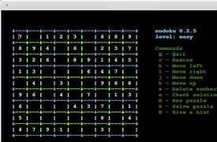
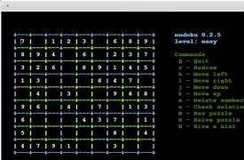

Aplicativos de hardware
Sudoku - Esse jogo clássico foi escolhido por ser um ótimo quebra cabeças que testa o raciocínio lógico. Foi instalado no Linux Mint por meio de linha de comandos feitas no terminal e é executado no terminal.
Py chess - Esse jogo foi escolhido porque também testa a mente, mas o que mais nos chamou a atenção, foi o fato dele ser totalmente desenvolvido em pyton
Como o sodoku, tambem foi instalado atraves de linhas de comando, mas a diferença dele é que ele é executado em uma janela própria e não no terminal.
 
